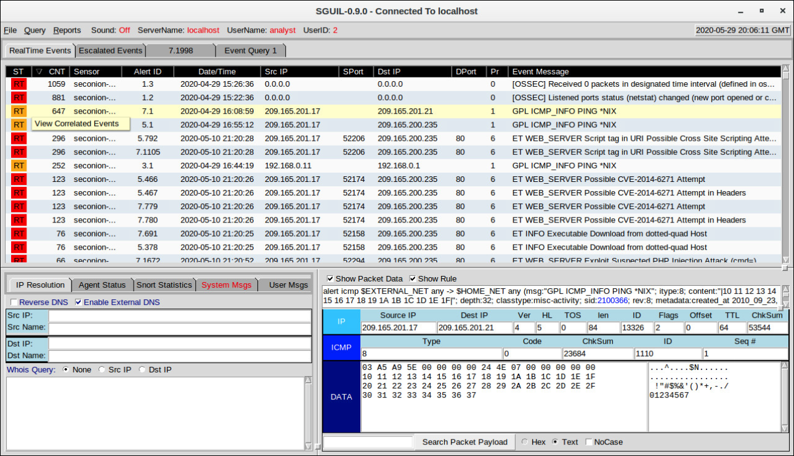
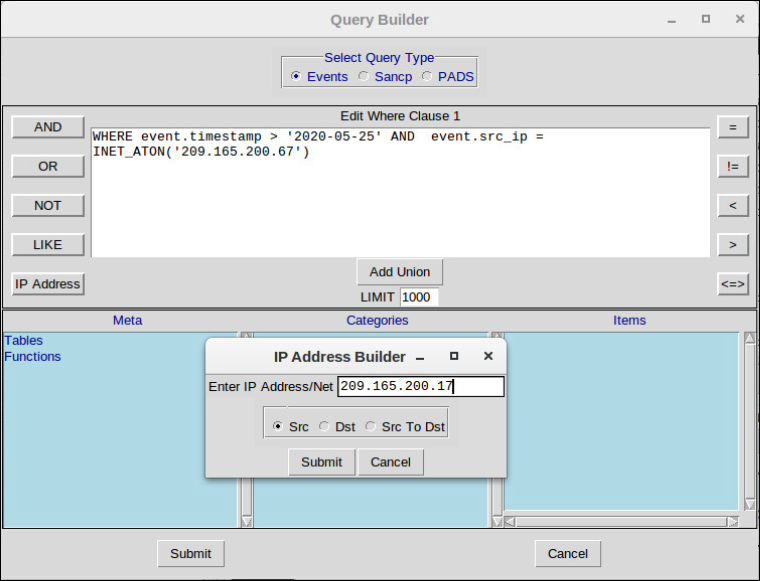
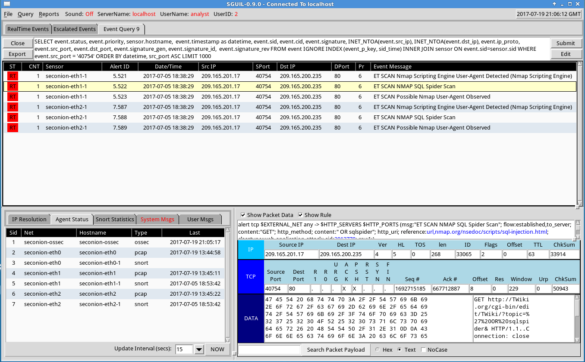
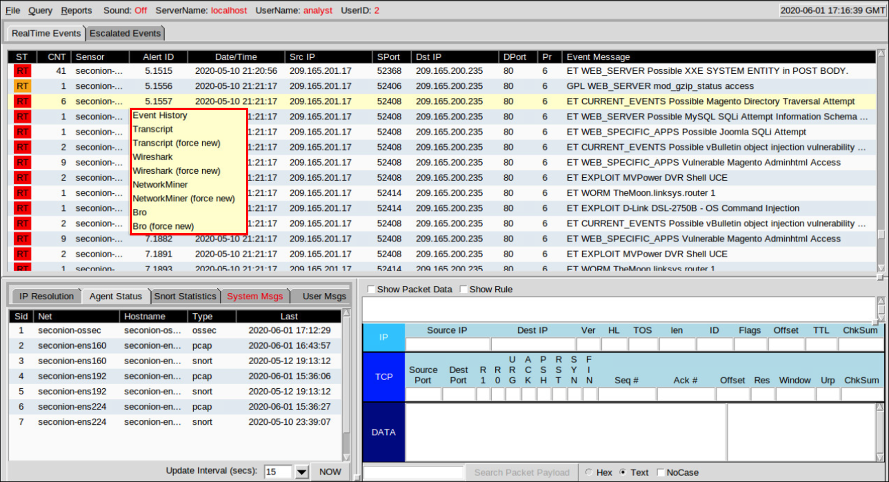
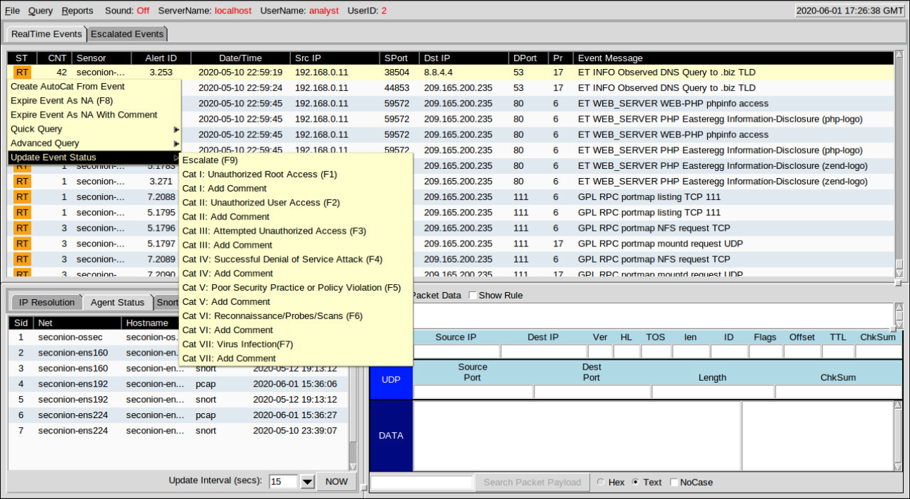
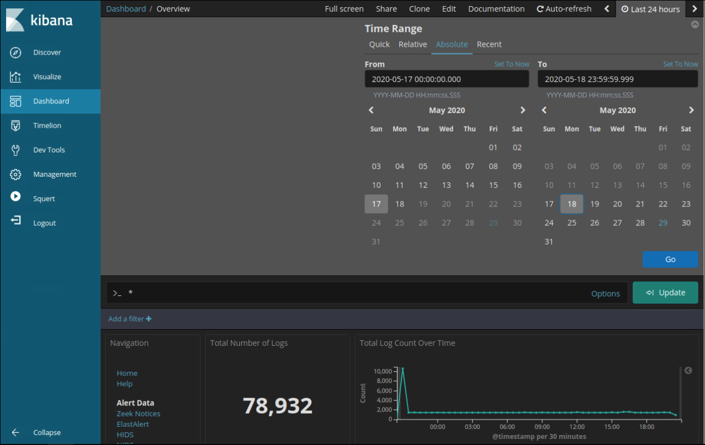
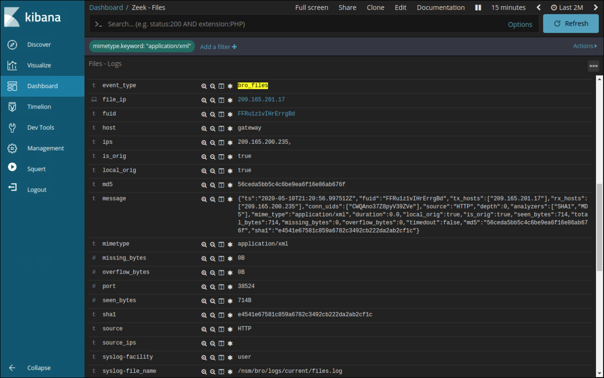

27.2.1 Uso de Sguil
El deber principal de un analista especializado en ciberseguridad es verificar las alertas de seguridad. Según la organización, las herramientas utilizadas para hacerlo varían. Por ejemplo, un sistema de tickets puede utilizarse para administrar la asignación y documentación de las tareas. En Security Onion, el primer lugar al que acudirá un analista en ciberseguridad para verificar las alertas es Sguil.
Sguil correlaciona automáticamente alertas similares en una única línea y permite ver eventos correlacionados representados por esa línea. Para tener una idea de lo que ha estado ocurriendo en la red, puede resultar útil ordenar la columna CNT para mostrar las alertas con la frecuencia más alta.
Al hacer clic derecho en el valor CNT y seleccionar Ver eventos correlacionados, se abre una ficha con todos los eventos correlacionados por Sguil. Esto puede ayudar al analista de ciberseguridad a entender el plazo durante el Sguil recibió los eventos correlacionados. Tenga en cuenta que cada evento recibe una identificación única de evento. Solo se muestra el primer ID de evento de la serie de eventos correlacionados en la pestaña Eventos en tiempo real. La figura muestra las alertas de Sguil ordenadas en CNT con el menú Ver eventos correlacionados abierto.
Alertas de Sguil ordenadas en CNT

27.2.2 Consultas de Sguil
Las consultas pueden crearse en Sguil utilizando Query Builder. Simplifica la construcción de consultas hasta cierto punto, pero el analista de ciberseguridad debe conocer los nombres de los campos y algunos problemas con los valores de los campos. Por ejemplo, Sguil almacena direcciones IP en una representación de números enteros. Para consultar una dirección IP en notación decimal punteada, el valor de la dirección IP debe colocarse dentro de la INET_ATON() función. El Generador de consultas se abre desde el menú Query de Sguil. Se debe seleccionar Query Event Table para buscar eventos activos.
La tabla muestra los nombres de algunos de los campos de la tabla de eventos que se pueden consultar directamente. Al seleccionar Mostrar Tablas de Base de Datos en el menú Consulta se muestra una referencia a los nombres y tipos de campo para cada una de las tablas que se pueden consultar. Cuando realice búsquedas en tablas de eventos, utilice el patrón event.fieldName = value.

En la figura se ve una consulta sencilla de marca de hora y dirección IP realizada en la ventana de Generador de Consultas. Cabe destacar el uso de la INET_ATON() función para simplificar el ingreso de una dirección IP.

En el siguiente ejemplo, el analista de ciberseguridad está investigando un puerto de origen 40754 asociado a una alerta de amenazas emergentes. Hacia el final de la consulta, la WHERE event.src_port = '40754' parte fue creada por el usuario en el Generador de Consultas. Sguil proporciona automáticamente el resto de la consulta y se refiere a cómo se van a recuperar, mostrar y presentar los datos asociados a los eventos.

27.2.3 Alternar a otros programas desde Sguil
Sguil permite que el analista de ciberseguridad pueda alternar con otras fuentes y herramientas de información. Los archivos de registro están disponibles en Elasticsearch. Las capturas de paquetes relevantes se pueden mostrar en Wireshark. También están disponibles transcripciones de sesiones TCP e información de detección de Zeek (Bro). El menú que se ve en la figura se abrió haciendo clic con el botón secundario del mouse sobre una identificación de alerta. Las selecciones en este menú abren la información acerca de la alerta en otras herramientas, lo que le permite al analista de ciberseguridad ver información completa y contextualizada.
Alternar a otros programas desde Sguil

Además, Sguil puede proporcionar pivotes a la información del Sistema de detección de activos en tiempo real pasivo (Passive-Real-time Asset Detection System PRADS) y del Perfil de conexión de red del analista de seguridad (Security Analyst Network Connection Profiler SANCP). Para acceder a estas herramientas, haga clic derecho en una dirección IP de un evento y seleccione los menús Consulta rápida o Consulta avanzada.
PRADS reúne datos de perfiles de red, incluida información sobre el comportamiento de los activos en la red. PRADS es una fuente de eventos, como Snort y OSSEC. También se puede consultar mediante Sguil cuando una alerta indica que podría estar en riesgo un host interno. Ejecutar una consulta de PRADS fuera de Sguil puede proporcionar información sobre los servicios, las aplicaciones y las cargas útiles que pueden ser relevantes para la alerta. Además, PRADS detecta cuándo aparecen nuevos activos en la red.
Nota: La interfaz de Sguil menciona a PADS en lugar de PRADS. PADS es el precursor de PRADS. PRADS es la herramienta que se utiliza en Security Onion. PRADS también se utiliza para completar tablas de SANCP. En Security Onion, las funcionalidades de SANCP se reemplazaron con PRADS; sin embargo, el término SANCP se sigue usando en la interfaz de Sguil. PRADS recopila los datos y un agente de SANCP registra estos datos en una tabla de datos de SANCP.
Las funcionalidades de SANCP se refieren a la recopilación y el registro de información estadística sobre el tráfico y el comportamiento de la red. SANCP proporciona un método para verificar que las conexiones de red sean válidas. Esto se logra mediante la aplicación de reglas que indican que el tráfico debe registrarse y la información con la que debe etiquetarse el tráfico.
27.2.4 Manejo de eventos en Sguil
Finalmente, Sguil no es solamente una consola que facilita la investigación de alertas. También es una herramienta para direccionar o abordar las alertas. Es posible realizar tres tareas en Sguil para administrar alertas. En primer lugar, las alertas que se consideren falsos positivos pueden caducar. Esto se puede hacer usando el clic derecho en la columna ST para el evento y usando el menú o presionando la tecla F8. Un evento caducado desaparece de la cola. En segundo lugar, si el analista de ciberseguridad no sabe cómo manejar un evento, puede derivarlo presionando la tecla F9. La alerta se moverá a la ficha de eventos derivados de Sguil. Por último, es posible categorizar un evento. La categorización es para los eventos que se identificaron como positivos verdaderos.
Sguil incluye siete categorías prediseñadas que pueden asignarse usando el menú que se ve en la figura o presionando la tecla de función correspondiente. Por ejemplo, si se presiona la tecla F1, un evento se categoriza como Cat I. Además, se pueden crear criterios que categorizarán automáticamente un evento. Se supone que los eventos categorizados han sido manejados por el analista de ciberseguridad. Cuando se clasifica un evento, se elimina de la lista de Eventos de Tiempo Real. El evento igual permanece en la base de datos y es posible tener acceso a él mediante consultas emitidas por categoría.
Este curso solamente abarca un nivel básico de Sguil. Existen numerosos recursos en Internet para aprender más.
Manejo de eventos en Sguil

27.2.5 Trabajar en ELK
Logstash y Beats se utilizan para la ingestión de datos en Elastic Stack. Proporcionan acceso a una gran cantidad de entradas de archivos de registro. Debido a que el número de registros que se pueden mostrar es tan grande, Kibana, que es la interfaz visual de los registros, está configurado para mostrar las últimas 24 horas de forma predeterminada. Puede ajustar el intervalo de tiempo para ver rangos de datos más amplios o antiguos.

Para ver los registros del archivo de registro durante un período de tiempo diferente, haga clic en la pestaña Últimas 24 horas en la esquina superior derecha de Kibana. A partir de ahí, defina el intervalo de tiempo seleccionando la ficha Rápida para intervalos de tiempo predefinidos. También puede introducir las fechas y horas manualmente mediante la pestaña Absoluto. La figura muestra un intervalo de tiempo absoluto entre el 17 de mayo y el 18 de mayo de 2020. Los registros se introducen en Elasticsearch en índices o bases de datos independientes según un intervalo de tiempo configurado.
La mejor manera de monitorear sus datos en Elasticsearch es crear paneles visuales personalizados que rastreen los datos que le interesan utilizar. Una variedad de gráficos visuales, incluyendo gráficos de barras, gráficos circulares, métricas de recuento, mapas térmicos, mapas geográficos, listas de números principales están disponibles. En Kibana, las visualizaciones y gráficos se pueden buscar y filtrar con métricas y depósitos de datos específicos.
27.2.6 Consultas en ELK
Elasticsearch se basa en Apache Lucene, una biblioteca de software de motor de búsqueda de código abierto que cuenta con capacidades de indexación y búsqueda de texto completo. Elasticsearch introduce datos en documentos denominados índices y esos documentos se asignan a varios tipos de datos utilizando patrones de índice. Los patrones de índice crean una estructura de datos de campos y valores con formato JSON. Los tipos de datos de los campos pueden estar en los siguientes formatos:
Usando las bibliotecas de software de Lucene, Elasticsearch tiene su propio lenguaje de consulta basado en JSON llamado Query DSL (Lenguaje específico de dominio). Query DSL incluye consultas de hoja, consultas compuestas y consultas costosas. Las consultas de hoja buscan un valor específico en un campo específico, como las consultas de coincidencia, término o rango. Las consultas compuestas incluyen otras consultas de hoja o compuestas y se utilizan para combinar varias consultas de forma lógica. Las consultas costosas se ejecutan lentamente e incluyen coincidencia difusa, coincidencia de expresiones regulares y coincidencia de caracteres comodín.
Lenguaje de consultas
Junto con JSON, las consultas de Elasticsearch hacen uso de los siguientes elementos: operadores booleanos, campos, rangos, comodines, expresiones regulares, búsqueda difusa, búsqueda de texto.
Operadores booleanos : operadores AND, OR y NOT:
Campos - En pares clave: valor separados por dos puntos, especifica el campo clave, dos puntos, un espacio y el valor:
Rangos - Puede buscar campos dentro de un rango específico usando corchetes (inclusive) o llaves (exclusivo):
Wildcards - El * carácter es para caracteres wildcard de varios caracteres y el ? para caracteres wildcard de un solo carácter:
Regex - se colocan entre barras diagonales (/):
Búsqueda difusa - la búsqueda difusa utiliza la distancia de Damerau-Levenshtein para coincidir con términos similares en la ortografía. Esto es genial cuando el conjunto de datos tiene palabras mal escritas. Utilice la tilde (~) para encontrar términos similares:
Búsqueda de texto : escriba el término o valor que desea encontrar. Esto puede ser un campo, o una cadena dentro de un campo, etc.
Ejecución de consultas
Elasticsearch se diseñó para interactuar con usuarios que utilizan clientes basados en web que siguen el marco HTTP REST. Las consultas se pueden ejecutar utilizando los siguientes métodos:
http://localhost:9200/_search?q=query:ns.example.com
curl "localhost:9200/ _search?q=query:ns.example.com"
Nota: Las consultas de Elasticksearch avanzadas no se incluyen en el alcance de este curso. En los laboratorios, se suministrarán los enunciados de consultas complejas si es necesario.
27.2.7 Investigación de llamadas de proceso o API
Las aplicaciones interactúan con un sistema operativo (operating system OS) mediante llamadas del sistema a la interfaz de programación de aplicaciones (application programming interface API) del sistema operativo (operating system OS), como se ve en la figura. Estas llamadas del sistema permiten tener acceso a muchos aspectos del funcionamiento del sistema, como las siguientes:
El malware también puede hacer llamadas al sistema. Si el malware puede engañar al kernel de un OS y para que le permita hacer llamadas al sistema, son posibles muchas vulnerabilidades.
El software HIDS rastrea el funcionamiento de un OS host. Las reglas de OSSEC detectan los cambios en parámetros con base en el host, como la ejecución de procesos de software, los cambios en privilegios de usuarios y las modificaciones del registro, entre otros. Las reglas de OSSEC activarán una alerta en Sguil. Girar a Kibana en la dirección IP del host le permite elegir el tipo de alerta según el programa que la creó. El filtrado de índices OSSEC da como resultado una vista de los eventos OSSEC que se produjeron en el host, incluidos los indicadores de que el malware puede haber interactuado con el kernel del sistema operativo

27.2.8 Investigación de detalles de los archivos
En Sguil, si el analista en ciberseguridad sospecha de un archivo, el valor hash se puede enviar a un sitio en línea, como VirusTotal, para determinar si el archivo es un malware conocido. El valor de hash se puede enviar desde la ficha de búsqueda en la página de VirusTotal.
En Kibana, Zeek Hunting se puede utilizar para mostrar información sobre los archivos que han entrado en la red. A partir de los tipos MIME, o medios, que están presentes, se pueden configurar filtros para mostrar información sobre tipos específicos de archivos como application/xml o application/zip. A partir de ahí, se pueden mostrar los detalles de los archivos individuales, como se muestra en la figura. Tenga en cuenta que en Kibana, el tipo de evento se muestra como bro_files, aunque el nuevo nombre de Bro sea Zeek.
Detalles del archivo de Zeek como se muestra en Kibana

Numerosos detalles están disponibles para los archivos. En este ejemplo, se muestran los hashes MD5 y SHA-1, al igual que otros detalles. Las entradas azules proporcionan pivotes para ver los detalles de la información proporcionada en la tabla en CapMe! u otras herramientas.
27.2.9 Práctica de laboratorio - Tutorial de expresiones regulares
Una expresión regular (regular expression regex) es un patrón de símbolos que describe datos que deben coincidir en una consulta o en cualquier otra operación. Las expresiones regulares se construyen en forma similar a las aritméticas, utilizando diversos operadores para combinar expresiones más pequeñas. Hay dos estándares principales de expresiones regulares, POSIX y Perl.
En esta práctica de laboratorio utilizarán un tutorial en línea para estudiar expresiones regulares. También describirán la información que coincide con expresiones regulares dadas.
27.2.10 Práctica de laboratorio - Extraer un ejecutable de un PCAP
Analizar registros es muy importante, pero también lo es comprender de qué manera suceden las transacciones de red al nivel de los paquetes.
En esta práctica de laboratorio analizarán el tráfico de un archivo pcap previamente capturado y extraerán un ejecutable del archivo.
27.2.11 Video - Interpretar datos HTTP y DNS para aislar a los actores maliciosos
Vea el vídeo para ver un tutorial del laboratorio Security Onion Interpret HTTP and DNS Data to Aislar Threat Actor.
27.2.12 Práctica de laboratorio - Interpretar datos HTTP y DNS para aislar al actor de la amenaza
En este laboratorio, investigará las vulnerabilidades de inyección SQL y exfiltración de DNS mediante herramientas de seguridad Onion.
27.2.13 Video - Aislamiento de hosts afectados mediante 5 tuplas
Vea el video para ver un tutorial del Host comprometido con aislamiento de Security Onion usando el laboratorio de 5 tuplas.
27.2.14 Práctica de laboratorio - Aislar hosts afectados con el método de cinco tuplas
En este laboratorio, usará las herramientas de Security Onion para investigar un ataque utilizando las herramientas de Security onion.
27.2.15 Laboratorio - Investigar un ataque de malware Exploit
En este laboratorio usará Security Onion para investigar un malware más complejo explotar el uso de un kit de ataque para infectar hosts.
27.2.16 Laboratorio - Investigación de un ataque en un host de Windows
En esta práctica de laboratorio: